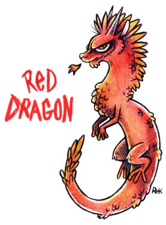
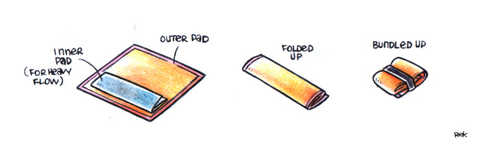

About
About Projects
Projects Games
Games Stories
Stories Store
Store Hobby
Hobby Notes
Notes How-to
How-to
Every month since I was 12 years old, a big construction project happens inside of me. Workers erect a fortress to try and contain the Red Dragon, but every month the battlements fail. At the worksite a number rolls over to 348, undeterred, they continue to build.
I can't help but marvel at my body's persistence.
To deal with the dreaded dragon, I use homemade reusable sanitary pads. Even if I live on a boat and don't always have access to a washing machine and dryer, it all works out fine. A cup is a good reusable option for some people, I've tried it, but it's not something I'm personally comfortable with.
Thoughts on disposable pads? In my early teens I used disposable pads, but the adult me prefers to wash reusable ones, it was getting harder to ignore the growing waste I was generating.

Design. When first researching designs for my pads, I found all sorts of suggestions online, but in the end I chose a simple no-sew option. The pad is made from simple pieces of fabric(25x29 cm). No-sew sanitary pads work by folding the fabric of the pad over itself. I fold mine about 3 times, to a reasonable width. The folded pad is 7x25 cm. For thicker flow days I add another liner inside for extra absorbency. I found square 100% cotton towels at a store, and bought a 100% cotton bathroom towel with plans to cut it down into squares that match the size of the other towels(although it is necessary to sew the edges otherwise the fabric will unravel). For easy carrying, I folded each pad in 3's so it makes a little bundle and put an elastic around each one.
No wings. My pads have no wings, but I chose this on purpose because I wear briefs and that the wings can't wrap around the bottom. I make sure to wear snug underwear so that it stays put. It does slide over a bit at times, but I've gotten used to it. Sewing wings on such a design would not be difficult, provided that you too do not wear briefs.
How many pads? How many pads you need depends on how heavy your flow is, and how long it typically lasts. The typically amount lies between 4 and 12, I use about 6 pads myself, but you may want more depending on what you're comfortable with.
Material? I chose cotton because it is durable, affordable, easy to find, and absorbent The outer layer is a tight-knit cotton, the ones I got had a little border sown on.
Washing. When a pad is soiled, I throw it in a bucket of cold water along with some baking soda. The baking soda will lift the blood out of the material while helping combat odors. I throw every new pad into the bucket as I use them, and change the water in the bucket everyday(sometimes twice a day, especially if it's warm out), adding more baking soda afterwards. When my period is over, I empty the bucket, rinse the pads with freshwater a few times to wash out the baking soda, then wash with with some laundry detergent. When I am at anchor, I wash them by hand and let them air dry when the sun is out, but when near land I use a washing machine and dryer at a laundromat. For stubborn stains, I use a brush with a baking soda paste to help scrub them out.
When away from home. When I go out, I carry a bag for soiled pads and throw them into the bucket as soon as I get back home.
I've been using the same pads since 2016 and they are still fine.
written on 2026.08.08.